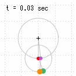
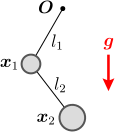
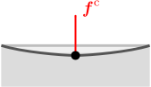
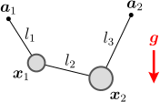
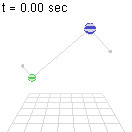
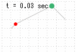
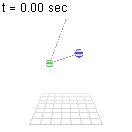
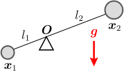
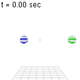
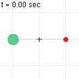

8.二重振り子

この章のシミュレーション（クリックで計算開始）：
多体系の拘束力

二重振り子の運動
この運動方程式を解くために知る必要があるのは、これまでと同様、拘束力
そこでこの章では、おもりの運動
拘 束 力 の 向 き が 決 ま ら な い 多 体 系 の ダ ラ ン ベ ー ル の 原 理 の 導 出 物 体 の 運 動 の 計 算
8.1拘束力
第5章でボール同士の衝突を考えた際、各々のボールにダランベールの原理を適用すると、未定乗数の数が多くなりすぎるという問題があった。この節では、二重振り子の場合にも同じ問題が生じることを確認する。
まず、初期値
各々の物体に対するダランベールの原理より式(
まず、拘束力
これらをまとめて書くと、式(
ダランベールの原理は式(
この状況は、ボール同士の衝突（第5章）の場合と同じである。ボール同士の衝突では、作用・反作用の法則により、両方のボールの未定乗数が等しくなり（
式(
8.2多体系のダランベールの原理→
まず、外力
では、「運動の勢い」とはどのように定量化されるのだろうか。ダランベールの原理(右 辺 左 辺
それらしき量が出てきたが、この
ところで、例えば、重力下での振り子の場合、おもりの速度の大きさは時間とともに変化するので、運動エネルギーは保存していない。しかし、全体としては周期的な運動を繰り返すのだから、運動が減衰しているわけではように見える（摩擦を無視している）。この場合でも、何らかの保存則が成り立っているではないだろうか。これは正しい。実際、重力下の運動では、運動エネルギーに「ポテンシャルエネルギー」と呼ばれる項を加えたものが保存する（以下の【8.2-注2】）。
【8.2-注1】ボール同士の弾性衝突は、運動エネルギー
導出の概要
【8.2-注2】力学的エネルギー
重力と拘束力のみが働いている場合、力学的エネルギー
運 動 エ ネ ル ギ ー ポ テ ン シ ャ ル エ ネ ル ギ ー
導出
運動方程式は
補足
ポテンシャルエネルギーは重力に逆らって上に行くほど大きくなる。逆に、運動エネルギーは上に行くほど小さくなるので、足し合わせたものが一定になっているわけである。
なお、ポテンシャルエネルギーは重力以外の力
多体系のダランベールの原理：式(

まず、拘束条件
拘 束 条 件 の 破 れ 方 が 同 じ で あ れ ば 、 は 等 し い
ここからは、外力
この議論の仕組みについて、見直しておこう。そもそも、
【8.2-注3】正射影行列
拘束条件
これを言葉で表すなら、「
証明
定理を示すには、
まず、
拘束条件が時間変化する場合も、ダランベールの原理(
ここまでは、拘束条件が時間変化しない場合を考えた。時間変化する拘束条件
また、
以上により、拘束力
拘束力
ダランベールの原理(
【8.2-注4】多体・多拘束での拘束力
拘束条件
導出
8.3物体の運動
以上で、必要な議論がそろった。この節では、まず、拘束条件がある場合の計算方法についてまとめる。その後、具体的な例として、ディアボロ、2重振り子、シーソーについて、数値計算を行う（全ての例で拘束条件は時間に依らない：
物体の運動
複数の物体
【例題】ディアボロ：初期条件(

まず、2つの物体に1つの拘束条件が課せられている例として、右図のようなディアボロの運動を考える。
拘束条件
公 式 （ 【 注 】 ） の 計 算 ： 【 注 】


数値計算を行うと、右図のようになる。同図左のグリッドの間隔は
【8.3-注1】単位ベクトルの微分公式
単位ベクトル
導出
【例題】二重振り子：初期条件(
次に、2つの拘束条件を持つような例として、右図のような二重振り子の運動を考える。ひもの長さ
拘束条件
（ 【 注 】 ）
これを用いると、初期値

数値計算を行うと、右図のようになる。同図左のグリッドの間隔は
【例題】シーソー：初期条件(

最後に、3つまたは4つの拘束条件を持つような例として、右図のようなシーソーを考える。棒の長さ
拘束条件

それぞれのおもりに着目すると、振り子の運動方程式（第6章の6.3節）と同じ形になっている。ただし、重力加速度の部分が


数値計算を行うと、右図のようになる。同図左のグリッドの間隔は